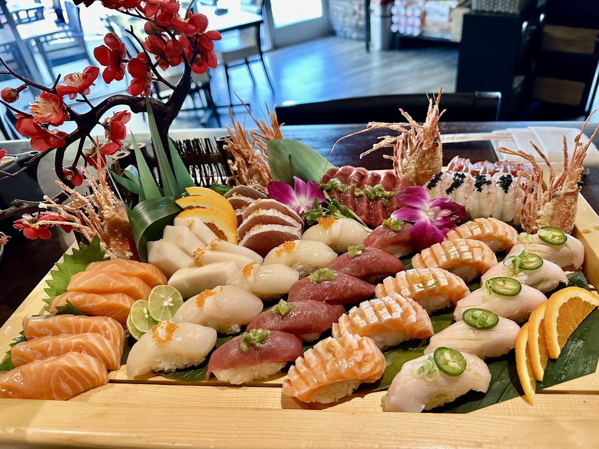

Sushi & sashimi
Fish flown in from Tsukiji market and other countries twice a week, sliced at the bar by Executive Chef Sun Il.
Plan this →Japanese restaurant · Hill Country Galleria, Bee Cave
Executive Chef Sun Il slices fish flown in from Tsukiji market and beyond. The rest is made in-house.

What to order
Fish at the bar, plus hot plates from the kitchen.
Fish flown in from Tsukiji market and other countries twice a week, sliced at the bar by Executive Chef Sun Il.
Plan this →

Tonkatsu pork bento box with gyoza, Galbi short ribs and eel donburi.
Plan this →


4.2 ★ · 381 Google reviews
We ate at Tadashi for our anniversary and absolutely loved it! The atmosphere was great, very cute and calm, played great music, smelled and looked clean. Our server was David and he was awesome! Very attentive but not annoying at all. The food was phenomenal. The miso soup was some of the best I have had. So flavorful! The crispy tuna rice appetizer was so yummy with the two opposites of the tuna and the crunchy, sticky rice and then the zing of the red onion was just great. We had the filet mignon skewer and it was good but not good enough to need it again.
We ate at Tadashi for our anniversary and absolutely loved it! The atmosphere was great, very cute and calm, played great music, smelled and looked clean. Our server was David and he was awesome! Very attentive but not annoying at all. The food was phenomenal. The miso soup was some of the best I have had. So flavorful! The crispy tuna rice appetizer was so yummy with the two opposites of the tuna and the crunchy, sticky rice and then the zing of the red onion was just great. We had the filet mignon skewer and it was good but not good enough to need it again.
It will be our spot from here out 💯 Our waitress had several tables alone- maybe a slight annoyance for half a second when waiting to place the order but as soon as the hostess noticed- she started to take our order. The server followed up quickly and everything was insanely responsive thereafter. I am such a critic(see my reviews 😂) but there’s nothing to complain about here!
We’ve been twice and our experience has been consistent. This place is clean and fresh inside with a moderately upscale ambiance. That plus their offering indoor and outdoor seating leads me to say that it is a good place for a date.

Behind the table
Executive Chef Sun Il leads the sushi bar. Fish is flown in twice a week, and everything else is made fresh in-house.
A calm, clean room with good music, indoor and outdoor seating, and attentive service. A new omakase menu is on offer.
Before you book
Mon to Thu 11 AM to 8:45 PM, Fri 11 AM to 9:15 PM, Sat 12 to 9:15 PM, Sun 12 to 8:45 PM. Call to confirm.
Yes, online ordering is available. The lunch menu and lunch special are back.
Yes, catering is part of what Tadashi offers. Send your date and guest count with the request form.
Yes, the restaurant has a reservations page. You can also call or send a note.
Yes. Indoor and outdoor seating, plus seats at the sushi bar.
Tell the staff when you order. For serious allergies or celiac disease, call ahead so the kitchen can talk it through with you.
Get in touch
12820 Hill Country Blvd E-105, Bee Cave, TX 78738
In the Hill Country Galleria. Order online, reserve or ask about catering.
Bee Cave, Lakeway, Dripping Springs, Austin, Cedar Park